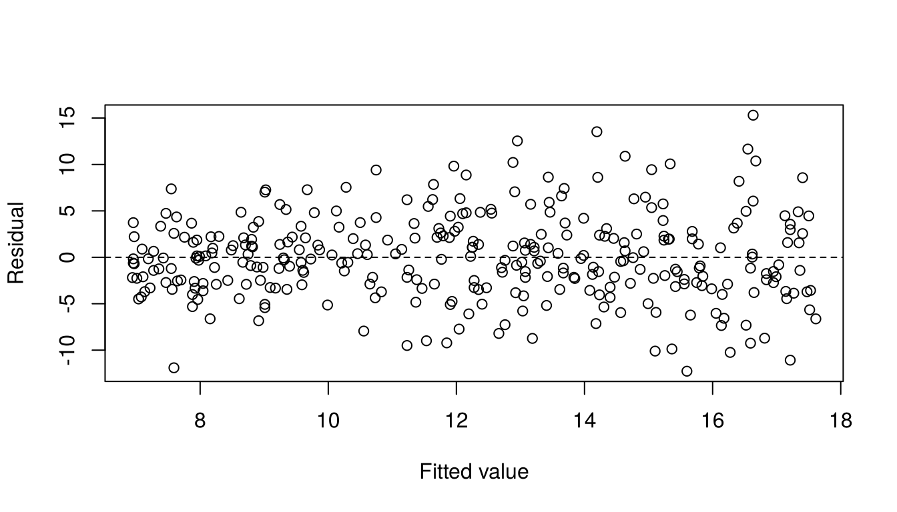
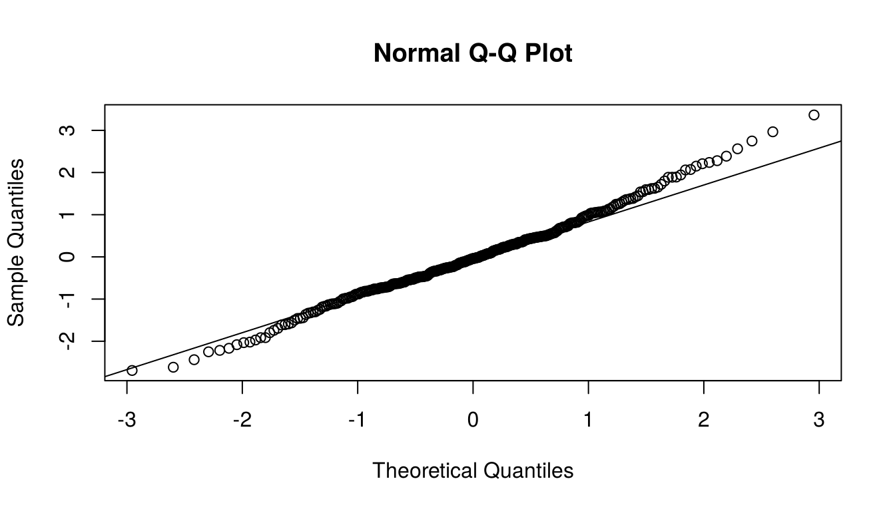

ventures <- read.csv("data/qm-intermediate-mock-exam.csv")
ventures$digital <- factor(ventures$digital, levels = c("No", "Yes"))QM Intermediate Mock Exam
This mock exam covers all six lectures of the course. It has 100 points. You pass with 55 points or more.
You take the Intermediate exam in TestVision. It lasts 120 minutes. You may use RStudio, Excel, the calculator in TestVision, a simple pocket calculator, and scrap paper. The practice exam in TestVision appears in your own TestVision account once the lecturer publishes it. You log in with your university account. There is no separate link. General information about TestVision for students is on the university page about TestVision.
You receive the QM Intermediate Code Sheet at the exam. Keep it open while you work on this mock exam.
Use 120 minutes as the practice time limit, as in the exam.
How this mock exam works
This mock exam gives an impression of what an exam in this course can look like. You download a data file, you run R yourself, and you type your answers.
All parts are open questions. You type a number with your calculation, or one to three sentences. An answer without a calculation or an explanation gets no points, unless the part asks only to report or to state something.
You do not have to simulate data, and you do not have to reproduce a simulation. The practice data are invented. The code that made them is in a collapsed box at the end of this page. It is there only so that anyone can check how we made the data. It is not part of the exam.
A part that starts with “In R:” needs code that you write and run yourself. Paste the R code that you used into your answer, and type the numbers that the part asks for. You can answer all other parts from your own results, from printed output, or with a short calculation. You may use R as a calculator everywhere.
Most parts give a structure for your answer. Copy it into the answer field and fill in each line.
All tests in this course are two-sided. Use a 5% significance level.
Dataset used throughout
The practice data are invented. Treat them as a simple random sample of 320 young ventures from a business registry. One row is one venture. The data are observational: none of the predictors was assigned by chance.
growth_pct: growth of annual sales compared with the year before, in percent. A value of 12 means that sales were 12% higher than in the year beforemarketing_10k: annual marketing spending, in €10,000s. The values run from 0.25 (€2,500) to 7.99 (€79,900)experience_years: prior industry experience of the lead founder, in years, from 0 to 18team_size: number of current team members, from 1 to 10digital:Nofor a mainly physical offering andYesfor a mainly digital offering.Nois the reference categoryspend_c:marketing_10k - 4, marketing spending centred at €40,000. This is close to the sample mean of about €40,400.
The population is the set of ventures in this registry. The data do not measure later survival or market conditions.
Download qm-intermediate-mock-exam.csv, save it in the folder data of your R project, and load it with the code below. If you save the file directly in your project folder, write "qm-intermediate-mock-exam.csv" as the file name.
Question 1: Simple regression (13 points)
A founder asks whether ventures that spend more on marketing grow faster. The outcome is growth_pct and the predictor is marketing_10k.
In R: load the data. Report the number of rows, the mean of
growth_pct, and the largest value ofgrowth_pct. Use (copy and paste) this structure: (2 points)R code: Number of rows: Mean of growth_pct: Largest value of growth_pct:In R: fit the simple regression of
growth_pctonmarketing_10k. Report the intercept and the slope, and interpret the slope in one sentence. Use (copy and paste) this structure: (6 points)R code: Intercept: Slope: Interpretation of the slope:In R: use the model of part 2 to calculate the fitted growth of a venture that spends €50,000 on marketing. The actual sales growth of this venture is 11%. Calculate its residual. Then state in one sentence what the sign of the residual means for this venture. Use (copy and paste) this structure: (5 points)
R code: Fitted growth: Residual: Meaning of the sign:
Model answer
Code
# Part 1
ventures <- read.csv("data/qm-intermediate-mock-exam.csv")
ventures$digital <- factor(ventures$digital, levels = c("No", "Yes"))
nrow(ventures)[1] 320mean(ventures$growth_pct)[1] 12.17166max(ventures$growth_pct)[1] 31.94# Part 2
simple_model <- lm(growth_pct ~ marketing_10k, data = ventures)
coef(simple_model) (Intercept) marketing_10k
6.598158 1.378342 # Part 3
fit_50k <- predict(simple_model, newdata = data.frame(marketing_10k = 5))
fit_50k 1
13.48987 11 - fit_50k 1
-2.489868 Answers
- Filled-in structure:
- R code: see the code above, part 1.
- Number of rows: 320
- Mean of growth_pct: 12.172
- Largest value of growth_pct: 31.94
- Filled-in structure:
- R code: see the code above, part 2.
- Intercept: 6.598
- Slope: 1.378
- Interpretation of the slope: among the 320 sampled ventures, a venture that spends €10,000 more on marketing has on average 1.38 percentage points higher fitted sales growth.
- Filled-in structure:
- R code: see the code above, part 3. €50,000 is
marketing_10k = 5. - Fitted growth: 13.49%
- Residual: \(11-13.49=-2.49\) percentage points
- Meaning of the sign: the residual is negative, so this venture grew less than the fitted growth for ventures with the same marketing spending.
- R code: see the code above, part 3. €50,000 is
Question 2: Assumptions and diagnostics (15 points)
Check the model of Question 1, growth_pct ~ marketing_10k. Parts 1 and 3 ask for two plots.
In R: make the residual-versus-fitted plot of the model. For each of the two assumptions, linearity and homoskedasticity, state whether it is likely to hold and describe the pattern in the plot that shows this. Use one or two sentences per assumption. Use (copy and paste) this structure: (6 points)
R code: Linearity: Homoskedasticity:Some ventures in this model have a large standardised residual or a large Cook’s distance. A colleague wants to delete all of them, “to get a cleaner model”. State in one sentence the rule for flagged observations that you learned in this course. Then describe in one or two sentences what you would do with these ventures. Use (copy and paste) this structure: (4 points)
Rule for flagged observations: What I would do with these ventures:In R: make the normal Q-Q plot of the standardised residuals. Describe in one sentence how the points lie relative to the line. Then explain in one sentence whether a departure from normality is a serious problem for this model with 320 ventures. Use (copy and paste) this structure: (5 points)
R code: How the points lie relative to the line: Serious problem for this model? Why:
Model answer
Code
# Part 1
plot(fitted(simple_model), residuals(simple_model),
xlab = "Fitted value", ylab = "Residual")
abline(h = 0, lty = 2)
# Part 3
qqnorm(rstandard(simple_model))
qqline(rstandard(simple_model))
Answers
- Filled-in structure:
- R code: see the code above, part 1.
- Linearity: the residuals lie around zero along the whole range of fitted values, with at most a slight bend at the ends. Linearity is roughly met.
- Homoskedasticity: the vertical spread of the residuals grows from left to right, with the fitted growth. The points form a fan shape. This is heteroskedasticity, so homoskedasticity (constant variance of the errors) is likely not met.
- Filled-in structure:
- Rule for flagged observations: investigate, report, never silently delete.
- What I would do with these ventures: look at the flagged ventures in the data and ask whether a value is an error or whether the venture is of a different kind. Then fit the model with and without these ventures, show both results, and say which one I use and why.
- Filled-in structure:
- R code: see the code above, part 3.
- How the points lie relative to the line: they follow the line in the middle. At the upper end they lie above the line, and near the lower end slightly below it.
- Serious problem for this model? Why: no. Normal errors matter in small samples. With 320 ventures the tests and intervals still hold approximately.
Question 3: Inference and fit (12 points)
A colleague drew 200 of the 320 ventures at random and fitted the model below to these 200 ventures. You do not know which ventures she drew, so you cannot run this model yourself. Answer from her output. The formulas are on the code sheet.
Call:
lm(formula = growth_pct ~ marketing_10k + experience_years +
digital, data = ventures_200)
Residuals:
Min 1Q Median 3Q Max
-11.2970 -2.7338 -0.0992 2.6132 12.3786
Coefficients:
Estimate Std. Error t value Pr(>|t|)
(Intercept) 2.73159 0.78897 3.462 0.000658 ***
marketing_10k 1.35473 0.12868 10.528 < 2e-16 ***
experience_years 0.28585 0.05277 5.417 1.77e-07 ***
digitalYes 3.17544 0.58246 5.452 1.49e-07 ***
---
Signif. codes: 0 '***' 0.001 '**' 0.01 '*' 0.05 '.' 0.1 ' ' 1
Residual standard error: 4.049 on 196 degrees of freedom
Multiple R-squared: 0.4803, Adjusted R-squared: 0.4723
F-statistic: 60.38 on 3 and 196 DF, p-value: < 2.2e-16For this model, SSE = 3212.85 and SST = 6181.93. The critical value for a 95% confidence interval and a 5% test with 196 degrees of freedom is \(t_{0.975,\,196}=1.972\).
Show with a calculation how the Multiple R-squared follows from SSE and SST. Then state in one sentence what this number says about the model for these 200 ventures. Use (copy and paste) this structure: (4 points)
Calculation of R-squared: What it says about the model:Calculate the 95% confidence interval for the coefficient of
marketing_10k. Then state whether the two-sided test at the 5% level rejects a coefficient of zero, and explain in one or two sentences how the interval shows this. Use (copy and paste) this structure: (8 points)Formula: Values used: Margin of error: Lower bound: Upper bound: Conclusion of the test, and how the interval shows it:
Model answer
Answers
- Filled-in structure:
- Calculation of R-squared: \(R^2=1-\text{SSE}/\text{SST}=1-3212.85/6181.93=0.48\)
- What it says about the model: among these 200 ventures, the model explains about 48% of the variation in sales growth.
- Filled-in structure:
- Formula: \(\hat\beta_j\pm t_{0.975,\,df}\,\operatorname{SE}(\hat\beta_j)\), with \(df=n-k-1=200-3-1=196\)
- Values used: \(\hat\beta_j=1.35473\), \(\operatorname{SE}(\hat\beta_j)=0.12868\), \(t_{0.975,\,196}=1.972\)
- Margin of error: \(1.972\times0.12868=0.254\)
- Lower bound: \(1.355-0.254=1.10\) percentage points per €10,000
- Upper bound: \(1.355+0.254=1.61\) percentage points per €10,000
- Conclusion of the test, and how the interval shows it: zero lies outside the interval. The interval contains the values of the coefficient that the two-sided 5% test does not reject, so the test rejects a coefficient of zero. At the 5% level we can conclude the following for all ventures in the registry: at the same experience and offering type, more marketing spending goes with higher sales growth.
Question 4: Multiple regression and a dummy predictor (21 points)
The table below has the layout of a regression table in a research paper. It shows three models of sales growth (growth_pct), fitted to all 320 ventures of the practice data. You do not need to run these models for parts 1 and 2.
| (1) | (2) | (3) | |
|---|---|---|---|
| Marketing spending (€10,000s) | 1.340*** | 1.338*** | 1.341*** |
| (0.106) | (0.100) | (0.100) | |
| Digital offering (1 = yes) | 2.969*** | 3.016*** | 3.084*** |
| (0.488) | (0.462) | (0.463) | |
| Founder experience (years) | 0.255*** | 0.258*** | |
| (0.042) | (0.041) | ||
| Team size (members) | 0.168 | ||
| (0.103) | |||
| Intercept | 5.418*** | 3.206*** | 2.449** |
| (0.528) | (0.617) | (0.771) | |
| Observations | 320 | 320 | 320 |
| \(R^2\) | 0.395 | 0.459 | 0.464 |
| Adjusted \(R^2\) | 0.391 | 0.454 | 0.457 |
Outcome: sales growth (%). Ordinary least squares. Standard errors in parentheses. All three columns use the same 320 ventures. The reference category of the dummy is ventures with a mainly physical offering. * p < 0.05, ** p < 0.01, *** p < 0.001.
The critical value for a 95% confidence interval and a 5% test is \(t_{0.975,\,df}=1.967\) in all three columns.
Perform a 5-step test of whether team size is individually significant in column (3), with the critical value approach at the 5% level. Then state in one sentence what the missing star of team size means. Use (copy and paste) this structure: (5 points)
Null hypothesis H0: and alternative hypothesis H1: Test statistic formula: Rejection rule: Value of the test statistic: Conclusion: Meaning of the missing star:Venture B spends €30,000 more on marketing than venture A. Its lead founder has 4 more years of experience. B has a digital offering and A a physical one. Both have the same team size. Calculate the fitted growth of B minus the fitted growth of A with column (3). Use (copy and paste) this structure: (5 points)
Calculation: Fitted growth of B minus fitted growth of A:In R: test whether founder experience and team size are jointly useful in the model of column (3), compared with the model of column (1), with the p-value approach at the 5% level. Then explain in one sentence how your conclusion and the missing star of team size can both be true. Use (copy and paste) this structure: (11 points)
R code: Null hypothesis H0: and alternative hypothesis H1: Test statistic formula: Values in the formula: Value of the test statistic: P-value: Conclusion: Why the conclusion and the missing star can both be true:
Model answer
Code
# Part 3
col_1 <- lm(growth_pct ~ marketing_10k + digital, data = ventures)
col_3 <- lm(
growth_pct ~ marketing_10k + digital + experience_years + team_size,
data = ventures
)
anova(col_1, col_3)Analysis of Variance Table
Model 1: growth_pct ~ marketing_10k + digital
Model 2: growth_pct ~ marketing_10k + digital + experience_years + team_size
Res.Df RSS Df Sum of Sq F Pr(>F)
1 317 5949.3
2 315 5272.6 2 676.77 20.216 5.491e-09 ***
---
Signif. codes: 0 '***' 0.001 '**' 0.01 '*' 0.05 '.' 0.1 ' ' 1Answers
- Filled-in structure:
- Null hypothesis H0 and alternative hypothesis H1: \(H_0:\beta_{team}=0\) and \(H_1:\beta_{team}\ne0\), where \(\beta_{team}\) is the coefficient of team size in the model of column (3) for all ventures of the registry.
- Test statistic formula: \(T=\hat\beta_{team}/\operatorname{SE}(\hat\beta_{team})\), which has the \(t_{315}\) distribution if \(H_0\) is true.
- Rejection rule: reject \(H_0\) if \(|t_{obs}|\ge t_{0.975,\,315}=1.967\).
- Value of the test statistic: the numbers in parentheses are standard errors, so \(t_{obs}=0.168/0.103=1.63\).
- Conclusion: \(|1.63|<1.967\), so do not reject \(H_0\). At the 5% level we cannot conclude that team size goes with growth at fixed marketing spending, offering type, and experience.
- Meaning of the missing star: the p-value of team size is above 0.05, so its coefficient is not significantly different from zero at the 5% level.
- Filled-in structure:
- Calculation: marketing, €30,000 is 3 steps of €10,000, so \(3\times1.341=4.023\). Experience: \(4\times0.258=1.032\). Digital offering: 3.084.
- Fitted growth of B minus fitted growth of A: \(4.023+1.032+3.084=8.14\) percentage points
- Filled-in structure:
- R code: see the code above, part 3.
- Null hypothesis H0 and alternative hypothesis H1: \(H_0\): the coefficients of founder experience and team size are both zero. \(H_1\): at least one of them is not zero.
- Test statistic formula: \(F=\dfrac{(\text{SSE}_R-\text{SSE}_C)/q}{\text{SSE}_C/(n-k_C-1)}\)
- Values in the formula: \(\text{SSE}_R=5949.3\) (column 1), \(\text{SSE}_C=5272.6\) (column 3), \(q=2\), \(n-k_C-1=315\)
- Value of the test statistic: \(F=\dfrac{(5949.3-5272.6)/2}{5272.6/315}=\dfrac{338.35}{16.74}=20.2\)
- P-value: 5.491e-09, that is 0.000000005
- Conclusion: the p-value is far below 0.05, so reject \(H_0\). At the 5% level we can conclude that the two predictors together improve the model of column (1).
- Why the conclusion and the missing star can both be true: the F-test asks about the two terms together, and the t-test asks about team size alone. The joint result comes from experience. A set of terms can be jointly significant while one of its terms is not significant.
Question 5: Interactions and curvature (19 points)
Part 1 asks whether marketing spending goes with more growth for digital ventures than for physical ventures. Parts 2 and 3 use a model in which the relation between marketing spending and growth can be curved.
In R: fit a model of sales growth (
growth_pct) with marketing spending centred at €40,000 (spend_c), the offering type (digital), the interaction of the two, and founder experience (experience_years). Report the coefficients ofspend_c,digitalYes, and the interaction. Then state the marketing slope for physical ventures, calculate the marketing slope for digital ventures, and interpret the interaction coefficient in one sentence. Use (copy and paste) this structure: (10 points)R code: Coefficient of spend_c: Coefficient of digitalYes: Coefficient of the interaction: Marketing slope for physical ventures: Marketing slope for digital ventures: Interpretation of the interaction coefficient:In R: fit a model of sales growth (
growth_pct) with marketing spending (marketing_10k), the square of marketing spending, the offering type (digital), and founder experience (experience_years), without an interaction. Report the coefficients of marketing spending and of its square. Then calculate the fitted change in growth when marketing spending rises from €20,000 to €30,000, and when it rises from €60,000 to €70,000. Offering type and experience stay fixed. State in one sentence what the two results show together. Use (copy and paste) this structure: (6 points)R code: Coefficient of marketing spending: Coefficient of its square: Fitted change from €20,000 to €30,000: Fitted change from €60,000 to €70,000: What the two results show together:A founder plans to spend €150,000 on marketing. She wants to use the model of part 2 to calculate her fitted growth. Give two reasons why she should not do this, one sentence each. Use (copy and paste) this structure: (3 points)
First reason: Second reason:
Model answer
Code
# Part 1
interaction_model <- lm(
growth_pct ~ spend_c * digital + experience_years,
data = ventures
)
coef(interaction_model) (Intercept) spend_c digitalYes experience_years
8.6155744 1.0437427 2.9667215 0.2454432
spend_c:digitalYes
0.6599745 # Part 2
curve_model <- lm(
growth_pct ~ marketing_10k + I(marketing_10k^2) + digital +
experience_years,
data = ventures
)
coef(curve_model) (Intercept) marketing_10k I(marketing_10k^2) digitalYes
2.0676173 2.1793589 -0.1045546 3.0101736
experience_years
0.2543531 Answers
- Filled-in structure:
- R code: see the code above, part 1.
- Coefficient of spend_c: 1.044
- Coefficient of digitalYes: 2.967
- Coefficient of the interaction: 0.660 (
spend_c:digitalYes) - Marketing slope for physical ventures: 1.044 percentage points per €10,000
- Marketing slope for digital ventures: \(1.044+0.660=1.704\) percentage points per €10,000
- Interpretation of the interaction coefficient: among the 320 sampled ventures and at the same founder experience, each additional €10,000 of marketing spending goes with 0.66 percentage points more sales growth for digital ventures than for physical ventures.
- Filled-in structure:
- R code: see the code above, part 2.
- Coefficient of marketing spending: 2.179
- Coefficient of its square: \(-0.105\)
- Fitted change from €20,000 to €30,000: the change from \(x\) to \(x+1\) is \(\hat\beta_1+\hat\beta_2(2x+1)\). With \(x=2\): \(2.1794-0.1046\times5=1.66\) percentage points
- Fitted change from €60,000 to €70,000: with \(x=6\): \(2.1794-0.1046\times13=0.82\) percentage points
- What the two results show together: the same extra €10,000 goes with about half as much extra growth at the higher level of spending. The fitted curve becomes flatter.
- Filled-in structure:
- First reason: €150,000 is far outside the range of the data. The largest spending in the sample is €79,900, so no venture in the data supports the curve there.
- Second reason: a quadratic curve does not stop curving. This one turns downward at about €104,000 of spending, and no data show such a turn.
Question 6: An answer of an AI assistant, and a decision (20 points)
Sara runs a young venture with a mainly digital offering. She gave column (3) of the table in Question 4 to an AI assistant. Here is column (3) again:
Outcome: sales growth (%), 320 ventures Estimate Std. Error
Marketing spending (€10,000s) 1.341 0.100
Digital offering (1 = yes) 3.084 0.463
Founder experience (years) 0.258 0.041
Team size (members) 0.168 0.103
Intercept 2.449 0.771She asked: “What does this mean for my marketing budget?” The AI answered:
“Good news. Your model controls for experience, team size, and offering type. So the marketing coefficient is a causal effect: if you spend €20,000 more on marketing, your sales growth will rise by 2.68 percentage points. Your venture is digital, and digital ventures grow 3.084% faster than the average venture. And the p-value of marketing is below 0.001, which proves that the assumptions of the model hold.”
Explain in one or two sentences whether the control variables in the model justify the claim that the marketing coefficient is a causal effect. Then write one sentence about €20,000 more marketing spending that the table does support. Use (copy and paste) this structure: (5 points)
Do the control variables justify the causal claim? Why: A sentence about €20,000 more marketing spending that the table supports:The sentence about digital ventures contains two errors. Name each error and explain it in one sentence. Then write one correct sentence about the coefficient 3.084. Use (copy and paste) this structure: (4 points)
First error: Second error: Correct sentence about the coefficient 3.084:The last sentence of the AI answer is about the p-value. Explain in one sentence whether a small p-value can show that the assumptions of the model hold. Then state in one sentence what the small p-value of marketing does show. Use (copy and paste) this structure: (4 points)
Can a small p-value show that the assumptions hold? Why: What the small p-value of marketing does show:
Sara’s venture had sales of €1,000,000 last year. So 1 percentage point of sales growth is €10,000 of extra sales. Of each euro of sales, 50 cents are left as margin after the direct costs. Sara is considering spending €10,000 more on marketing next year.
The 95% confidence interval of the marketing coefficient in column (3) runs from 1.14 to 1.54 percentage points per €10,000. Show with a calculation that €10,000 more marketing spending goes with extra sales between €11,400 and €15,400, and with an extra margin between €5,700 and €7,700. Use (copy and paste) this structure: (2 points)
Extra sales: Extra margin:Decide whether Sara should spend the extra €10,000 on the basis of these numbers, and give your reason in one sentence. Then explain in one sentence one reason why her true gain could differ from these numbers. Use (copy and paste) this structure: (5 points)
Decision and reason: Why her true gain could differ:
Model answer
Answers
- Filled-in structure:
- Do the control variables justify the causal claim? Why: no. A control variable holds fixed only what is measured and in the model. Variables that are not in the data can influence both marketing spending and growth, for example the quality of the product.
- A sentence about €20,000 more marketing spending that the table supports: “At the same experience, team size, and offering type, ventures that spend €20,000 more on marketing have on average 2.68 percentage points higher fitted sales growth.”
- Filled-in structure:
- First error: the outcome is in percent, so the difference is 3.084 percentage points, not 3.084%. “3.084% faster” would be a relative change.
- Second error: the comparison is with the reference category, ventures with a mainly physical offering, and not with the average venture.
- Correct sentence about the coefficient 3.084: “Ventures with a mainly digital offering have on average 3.084 percentage points higher fitted sales growth than ventures with a mainly physical offering that have the same marketing spending, experience, and team size.”
- Filled-in structure:
- Can a small p-value show that the assumptions hold? Why: no. A p-value is calculated under the assumptions of the model, so it cannot prove them.
- What the small p-value of marketing does show: it is evidence against a marketing coefficient of zero, if the assumptions hold.
- Filled-in structure:
- Extra sales: \(1.14\times\text{€}10{,}000=\text{€}11{,}400\) at the lower end and \(1.54\times\text{€}10{,}000=\text{€}15{,}400\) at the upper end.
- Extra margin: at 50 cents per euro, \(0.5\times\text{€}11{,}400=\text{€}5{,}700\) and \(0.5\times\text{€}15{,}400=\text{€}7{,}700\).
- Filled-in structure:
- Decision and reason: do not spend the extra €10,000 on this evidence. Even at the upper end of the interval, the extra margin of €7,700 is below the €10,000 that the marketing costs.
- Why her true gain could differ: the coefficient is an association among 320 ventures in observational data. It is not the effect of a change in her own budget, which can be smaller or larger.
The questions of this mock exam have 100 points together. Do the mock exam in R before you open the answers. Use the model answers to check your numbers, and also your units, reference categories, statements about what is held fixed, and the limits of causal claims.
Optional: how the practice data were made (not part of the exam)
You do not need this box for any question. The practice data were made with the code below. The fixed seed makes sure that the code always gives the same 320 rows as the file that you download. Answer every question for the registry data as the text describes them, not for this code.
set.seed(734)
n_mock <- 320
marketing_10k <- round(runif(n_mock, 0.25, 8), 2)
experience_years <- sample(0:18, n_mock, replace = TRUE)
team_size <- sample(
1:10, n_mock, replace = TRUE,
prob = c(8, 16, 20, 20, 14, 9, 6, 4, 2, 1)
)
digital <- factor(
ifelse(runif(n_mock) < 0.45, "Yes", "No"),
levels = c("No", "Yes")
)
spend_c <- marketing_10k - 4
growth_mean <-
8 + 1.10 * spend_c + 3 * (digital == "Yes") -
0.10 * spend_c^2 + 0.30 * experience_years +
0.70 * spend_c * (digital == "Yes") + 0.20 * team_size
growth_pct <- round(
growth_mean + rnorm(n_mock, 0, 2.5 + 0.40 * marketing_10k),
2
)
ventures <- data.frame(
growth_pct, marketing_10k, experience_years, team_size, digital, spend_c
)